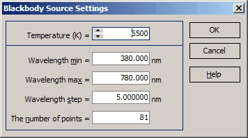

Blackbody Source Settings
Blackbody Source Settings
Navigation: OptiLayer Menu Commands > Data Menu >
Blackbody Source Settings
` <idh_edit_light_source.html>`__ ` <idh_menu_data.html>`__ ` <coneangledatabase.html>`__

The sole parameter that defines a blackbody spectrum is its Temperature (K). You can specify the range of wavelengths (minimum, maximum), and the number of spectral points by entering the desired values in their respective edit fields. When you modify one of these parameters, the other parameters are automatically adjusted accordingly. Press “OK” to close the dialog and generate the blackbody light source with the specified parameters.